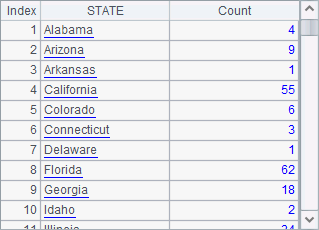

To return a cursor based on a user-defined function, the return class should be one that implements the interface com.scudata.dm.IlineInput. The following test.RandDataCursor file is such an example:
package test;
public class RandDataCursor implements com.scudata.dm.ILineInput {
private int rowno = 0;
private int range = 1000;
public RandDataCursor(Integer rg) {
this.range = rg;
}
public Object[] readLine() throws java.io.IOException {
rowno++;
Object[] result = new Object[2];
result[0] = Integer.valueOf(rowno);
result[1] = Integer.valueOf((int) (Math.random() * range ));
return result;
}
public boolean skipLine() throws java.io.IOException {
rowno++;
if (rowno <= 10000) return true;
return false;
}
public void close() throws IOException {
rowno = 10001;
}
}
The IlineInput class should implement three methods: readLine, skipLine, and close. Here the simple RandDataCursor file aims to generate a sequence comprising random integers, whose range can be specified through a parameter. Every record returned from readLine method is made up of a row number, which increases sequentially, and a random integer, which are similar to two fields of a table sequence. the skipLine method skips one record and then returns whether or not there is still data in the cursor. In the above file, it specifies that the cursor will return 10000 records at most. The close method is used to closes the cursor to delete unwanted resources, like the database connection.
Thus the user-defined cursor that returns a cursor can take RandDataCursor as a return class. For example:
package test;
public class Calc02 {
public static test.RandDataCursor getCursor(Integer range) {
RandDataCursor rdc = new RandDataCursor(range);
return rdc;
}
}
Here the user-defined function needs to define only one parameter, the range for the random intergers, and returns a cursor RandDataCorsor, which will generate random records. But the returned IlineInput class can¡¯t be directly used as a cursor. You need to call the newCursor method of the com.scudata.dm.UserUtils class to transfer it to a cursor. For example:
|
|
A |
|
1 |
=invoke(test.Calc02.getCursor,1000000) |
|
2 |
=invoke(com.scudata.dm.UserUtils.newCursor,A1,"") |
|
3 |
>A2.skip(100) |
|
4 |
=A2.fetch@x(100) |
A1 returns a user-defined cursor class, RandDataCursor. A2 invokes UserUtils¡¯s newCursor method to pass A1¡¯s result as a parameter; its result is an esProc cursor. A3 skips the first 100 records in the cursor. A4 then fetches 100 records from the cursor, and closes it. Below is A4¡¯s result:

Similar to retriveing text data, @t option can be used here when returning data, which will take the first row it fetches as the headers. You can also use @1 option to fetch data out as one column. By rewriting A2¡¯s code as =invoke(com.scudata.dm.UserUtils.newCursor,A1,"t"), the function will work as an @t option is used. Below is A4¡¯s result:
In fact RandDataCursor doesn¡¯t specify any column names. But the first row will be returned as the column names. As you can see, the second column, which consists of random integers, in the result set is different from the previous one.